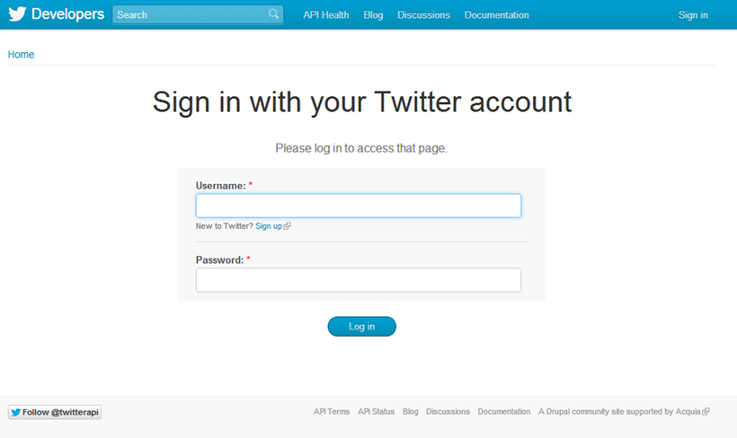
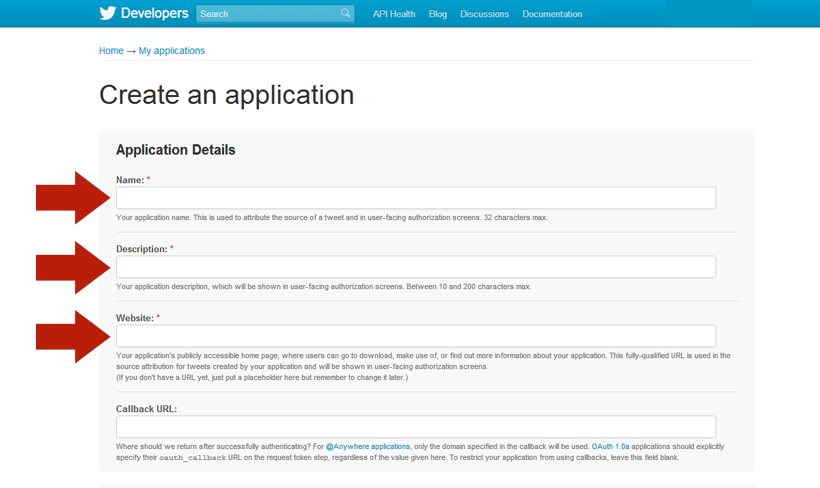
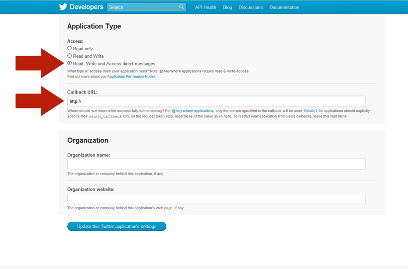
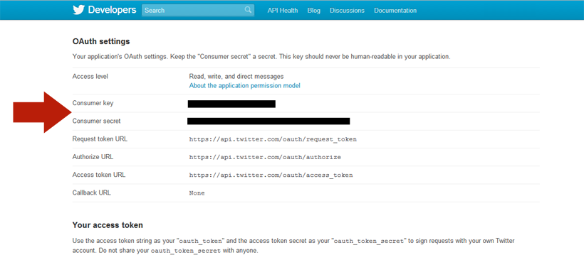
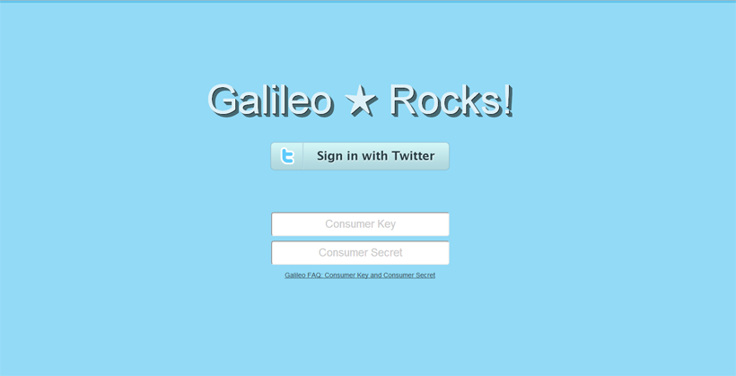

Galileo FAQs
Why do I need a Consumer Key and Consumer Secret?
With your own Consumer Key and Consumer Secret you can safeguard your Twitter account from the activity of other users as well as ensure adherence to Twitter’s Rules and Best Practices. Using your own keys also ensures you get to take full advantage of Twitter Search, Following and Unfollowing.
Do I have to enter the keys each time I use Galileo?
No. You will only need the Consumer Key and Consumer Secret the first time you use Galileo and if you need to re-install Galileo in the future.
How do I get my Consumer Key and Consumer Secret?
You will need to register an application with Twitter in order to generate your Consumer Key and Consumer Secret. This should take as little as five minutes to complete. Complete the following steps:
Step 1
Go to https://dev.twitter.com/apps/new
Step 2
Sign in with your Twitter account.

Step 3
Once signed in, you will see a page titled “Create an application”. Fill in the required application details. Then, click on the “Create your Twitter application” button.

Step 4
Click on the “Settings” Tab and go to the Application Type Section. Choose “Read, Write and Access direct messages” for the application Access. Then type a valid URL under the “Callback URL:” Use your own website (preferred) or use something like http://google.com or http://yahoo.com or http://bing.com (You get the picture). Click “Update this Twitter application’s settings”.

Step 5
Click on the “Details” Tab and go to the “OAuth settings” section. You will see your Consumer Key and Consumer Secret. Copy these for Galileo.

Step 6
Enter your Consumer Key and Consumer Secret. Click “Sign in with Twitter”.

Step 7
BUILD AN AUDIENCE THAT ★ ROCKS!